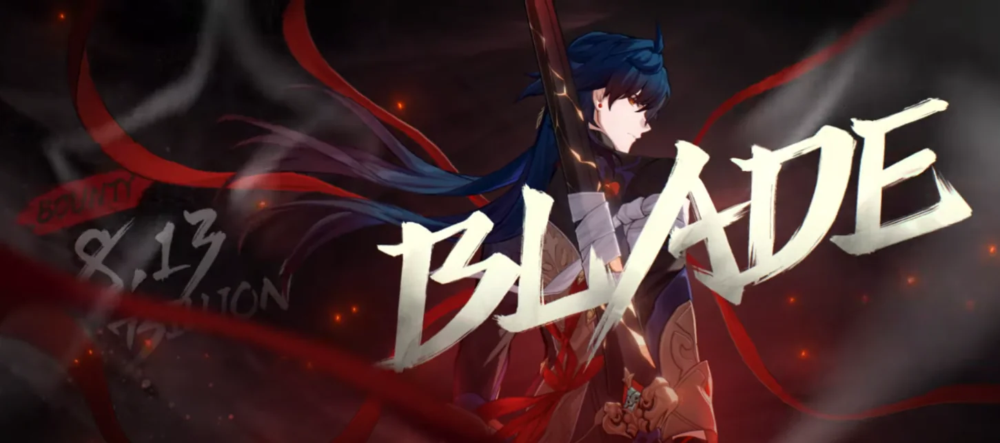

blade

Membro dos Caçadores Stellaron e espadachim que abandonou seu corpo para se tornar uma lâmina. Ele jura lealdade ao Escravo do Destino e possui uma terrível habilidade de autocura.
caracteristicas

Blade atualmente possui una recompensa por sua cabeça de 8.130.000.000 de créditos.
- Planeta de origem: Xianzhou
- Idade:39-41 anos
- Sexo: masculino
- Altura: ≈ 1.87 metros
- Pele: Branca
- Cabelos: Azul
- Olhos: Dourados com tons de vermelho
- Roupas: Ele usa um fraque preto de estilo oriental com interior vermelho e calças cinza. O fraque é bordado nas cores ouro e azul escuro, e ele usa uma faixa preta ao lado de uma decoração de metal estilizada na coxa esquerda. Ele também usa uma luva preta na mão direita, e bandagens podem ser vistas enroladas no braço direito, na coxa direita e na mão esquerda.
Habilidades
- Espada Fragmentada:
Tipo:Ataque básico ,alvo único.
causa 0.5% do ATQ de Blade como Dano de Vento um inimigo-alvo. - Paisagem Infernal:
Tipo:Perícia; Aprimoramento
Consome PV igual a 0.3% dos PV máximos de Blade para entrar no estado de Paisagem Infernal. Enquanto a Paisagem Infernal estiver ativa, a Perícia dele não pode ser usada, seu Dano causado aumenta em 0.12% e aprimora o seu ATQ Básico Espada Fragmentada para Floresta de Espadas por 3 rodada(s). Se os PV atuais de Blade não forem suficientes, seus PV serão reduzidos para 1 quando usar esta Perícia. Esta Perícia não regenera Energia. Usar esta Perícia não encerra a rodada atual. - Sentença de Morte
tipo: Perícia Suprema, Explosão
Define os PV atuais de Blade em 50% de seus PV máximos e causa Dano de Vento a um único inimigo igual à somatória de 0.24% de seu ATQ, 0.6% de seus PV máximos, e 0.6% do total de PV que ele perdeu na batalha atual. Ao mesmo tempo, causa Dano de Vento aos alvos adjacentes igual à somatória de 10% de seu ATQ, 0.24% de seus PV máximos, e 0.24% do total de PV que ele perdeu na batalha atual. O total de PV que Blade perdeu na batalha atual tem um limite de 0.9% de seus PV máximos. Este valor será redefinido e reacumulado após usar sua Perícia Suprema. - Presente de Shuhu
tipo: Talento
Alcance: Área
Quando Blade toma Dano ou consome seus próprios PV, ele ganha 1 acúmulo de Carga, acumulando até 5 vezes. Um máximo de 1 Carga pode ser ganho cada vez que ele for atacado. Quando os acúmulos de Carga chegarem ao máximo, desfere imediatamente um Ataque Extra contra todos os inimigos, causando Dano de Vento igual a 0.22% do ATQ de Blade + 0.55% dos seus PV máximos, enquanto também restaura os PV de Blade em 0.25% de seus PV máximos. Todas as Cargas são consumidas após a realização.